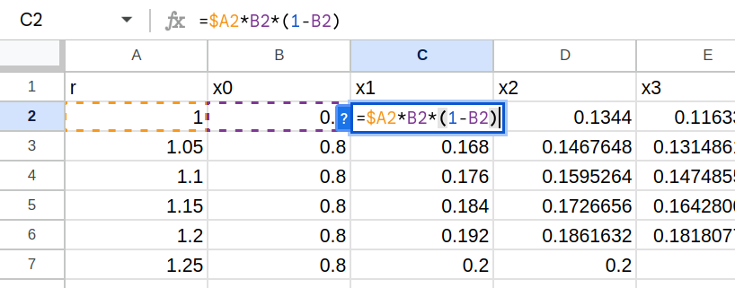
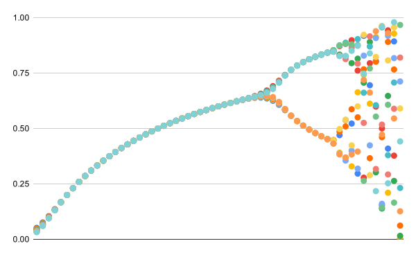

Feedback
- Let \(F(x)=x^2+1\). Find the first five points in the orbit of \(x_0=0\). Describe the orbits in \(F(x)\) of any initial condition \(x_0\).
- Let \(F(x)=x^2 - 2\). Find the first five points in the orbits of:
- \(x_0=0\)
- \(x_0=\frac{1}{2}\)
- \(x_0=1\)
- \(x_0=2\)
- Let \(C(x)=\cos(x)\). For any initial value \(x_0\), the orbit of \(x_0\) in \(C(x)\) converges. Find the value of this convergence.
- Let \(F(x)=1-x^2\). Determine the \(2\)-cycle reached from \(x_0=\frac{1}{2}\).
- In the previous problem, the same \(2\)-cycle can be reached for any \(x_0\) where \(-k < x_0 < k\). Find \(k\).
- Let \(F(x)=\sin(kx)\). Describe the orbit of \(x_0=\frac{1}{2}\) in \(F(x)\) for:
- \(k=1\)
- \(k=2\)
- \(k=3\)
-
Let \(P(x)=2x(1-x)\).
- Expand \(P^2(x) = P(P(x)) \).
- Determine the first 10 terms in the orbits of \(x_0=0.2, 0.5, 0.8\)
- For initial conditions of \(x_0=0.05, 0.1, ..., 0.95\), use a spreadsheet to show that the orbits all converge to the same value. Create a plot of the orbits that depicts them converging.
-
Create a spreadsheet implementing the Babylonian square root algorithm.
- Place the value in A1 for which we want to approximate the square root. Then place a guess in A2. The rows below A2 should iteratively improve our approximation of A1.
- Add more columns to demonstrate the algorithm working for several examples.
-
A very different system that still involves feedback is your schoolwork. You complete assignments that get
grades that influence the way you complete future assignments. When we start looking for feedback systems, we
find them everywhere.
- Identify three feedback systems that you interact with.
- What does "orbit" mean in the context of those systems?
-
Watch The Equation that Changed How We See the World.
Create the bifurcation diagram for the logistic equation in a spreadsheet. Here is one way to do it:
- Make column headers for r, x0, x1, etc.
- Fill in the A column with r values from 1 to 4.
- Fill in the B column with an initial value.
- Use the formula for the logistic equation shown in the image below. Note the $ symbol in front of the A. This is so you can drag the equation down, and then right, without that A changing. Each row will contain an orbit.
- Once the orbits are expanded to the right, select all of the columns from around column P to the right, and create a scatter plot.
You should end up with a chart that looks like this: -
Let \(F(x) = x^2 + \frac{1}{4} \).
- Analyze the orbits for real \(|x_{0}| \leq \frac{1}{2}\).
- Show that the orbit of any real \(|x_0| > \frac{1}{2}\) will go to \(\infty\).
- Is there a value \(x_0 \in \mathbb{C}\) that has a cycle?
- Strogatz Chapter 2
- Mitchell, Complexity Chapter 2.